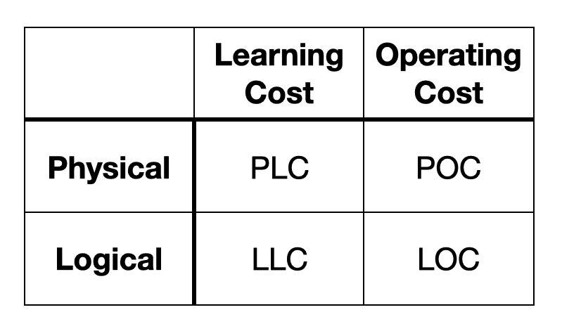

Usability is a concept that arises in the relationship between value, delivery, and subject.
Value, also called "User Experience" (UX), is what your product provides to its subject. Delivery is accomplished with "User Interface" (UI)'s support. The subject, related to "Accessibility", is who will use the product. The overall challenge is to maximize the value, deliver it efficiently, and define the subject.
One of the UI roles is to deliver the value of the product to the subject without loss and delay. This is usability. So you need to correctly recognize what is the value and who is the subject first, then think about delivery. Here, (1) usability costs and (2) immersion are important keys.
(1) Usability costs: Four costs can be obstacles to learning and operating, and they should be minimized. 
Physical Learning Cost (PLC): For example, the placement of the physical buttons is difficult to understand. It takes time, but it is not impossible to learn.
Physical Operating Cost (POC): The response delay is so large that it takes a long time to operate. This is operationally unavoidable.
Logical Learning Cost (LLC): The menu hierarchy is not properly organized, so it is not easy to get to the desired item. It takes time, but it is not impossible to learn.
Logical Operating Cost (LOC): Every time, the same unnecessary operating steps are required. This is operationally unavoidable.
You may not have to take everything into account. In the case of mobile apps, the physical costs are passed on to a device manufacturer. Also, by following UI guidelines of its application framework, learning costs will be reduced because they provide rules that should be followed so that relearning among applications is not necessary.(2) Immersion: Immersion is a state of being able to enjoy the value without any disturbance. Immersion is used in the context of VR but also applies to classical UI. This could be a part of the two operating costs above, but we treat it separately here. As a general rule, do not take any focus away from the subject. Another role of UI is to carefully control the subject's immersive behind the scenes. For example, smooth animations are used to prompt the subject to do something without interfering with the immersion. This ensures that the delivery of the value occurs without delay.
Functionality is the foundation of usability.
A product must function as claimed,
but a trade-off between formative beauty and functional beauty is often a problem.
 If you prioritize formative beauty, the value of the product will increase, but on the other hand,
functional beauty will decrease and the value will decrease.
Specifically, sharp edges give it a cool impression, but it does not feel good to hold.
It is up to the designer's (or subject's) choice to decide which point to aim for,
but another challenge here is to aim for more beauty and more functionality.
Of course, there are also limitations due to manufacturing costs.
If you prioritize formative beauty, the value of the product will increase, but on the other hand,
functional beauty will decrease and the value will decrease.
Specifically, sharp edges give it a cool impression, but it does not feel good to hold.
It is up to the designer's (or subject's) choice to decide which point to aim for,
but another challenge here is to aim for more beauty and more functionality.
Of course, there are also limitations due to manufacturing costs.
Accessibility is a concept that is strongly related to usability. In a nutshell, accessibility is about who you provide value to. The product could be used by a variety of people, including children, the elderly, the injured, and the disabled. Specifically, unconsidered color schemes negatively affect usability. In other words, the value of the product is diminished for specific people. It is challenging to create something easy to use for all people.
"Human-Centered Design" (HCD) is just what it says, but UI is often designed for
implementation convenience rather than human's one.
If the implementation convenience is exposed to the outside, it is not HCD.
For example, you may need to disable function A to enable function B.
In such a case, it indicates that more abstraction about the function is needed for humans.
(Copyright @kahiroka)